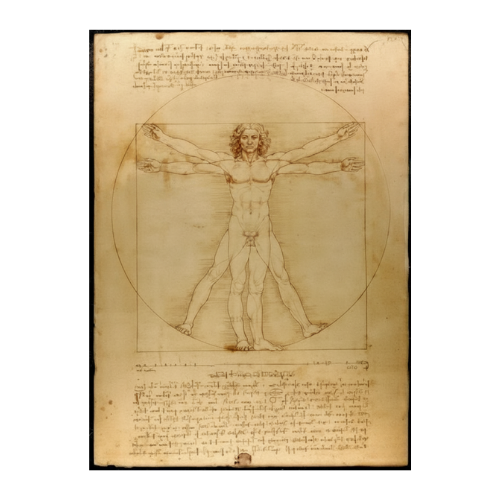
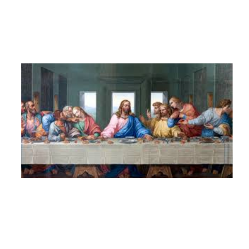
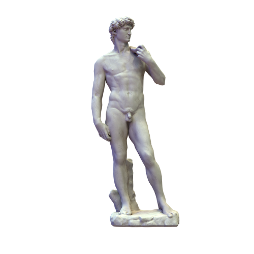
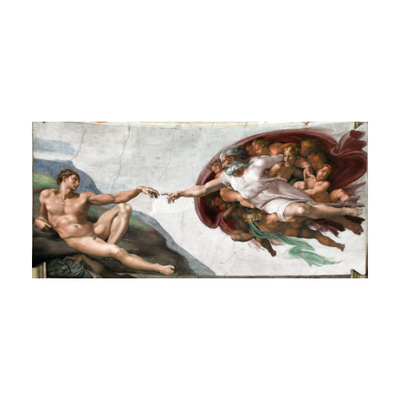
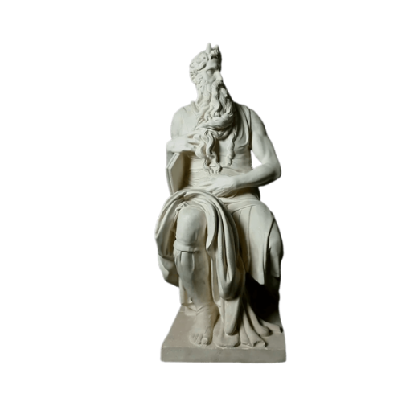
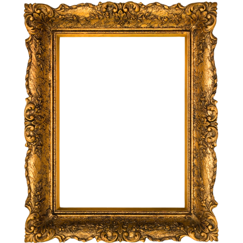
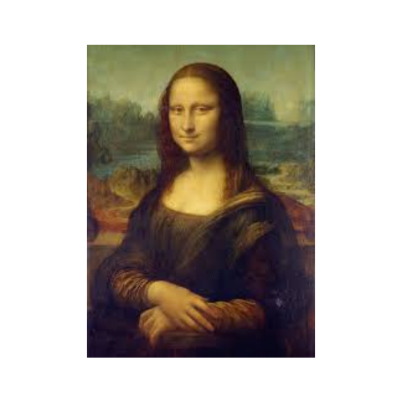
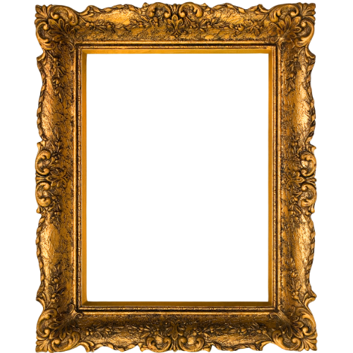
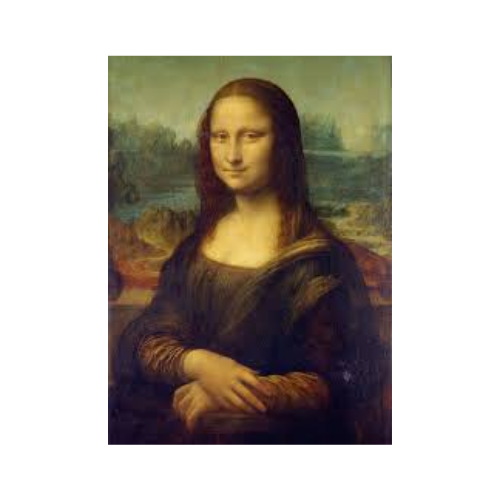

Tema: Retrato de Lisa Gherardini, esposa de um comerciante florentino.
Aprofundamento: É a síntese das inovações de Da Vinci.
Sfumato: Técnica revolucionária que consiste em suavizar as transições de cor e luz, criando um efeito de névoa ou fumaça que impede que as linhas de contorno sejam nítidas. É o que confere o ar enigmático ao sorriso e aos olhos da Mona Lisa.
Olhar e Expressão: O sorriso "esquivo" e o olhar que parece seguir o observador de qualquer ângulo dão profundidade psicológica à figura, um marco do Humanismo Renascentista.
Paisagem de Fundo: A paisagem montanhosa e irrealista (com rios e pontes sinuosas) contribui para o mistério da pintura, simbolizando a união entre a humanidade e o universo natural.

O Homem Vitruviano
(Desenho em tinta e grafite, c. 1490)
Tema: Estudo das proporções do corpo humano.
Aprofundamento: Mais do que um desenho, é um manifesto do Humanismo Renascentista, unindo arte, ciência, filosofia e matemática.
Referência Clássica: A obra é inspirada nos escritos do arquiteto romano Vitrúvio, que descreveu as proporções ideais do corpo humano e sua relação com a arquitetura.
A Harmonia Universal: Representa um homem nu em duas posições sobrepostas, inscrito em um quadrado (simbolizando o mundo terrestre e a estabilidade) e um círculo (simbolizando o divino, o universo e a perfeição).
Conclusão Humanista: Da Vinci demonstra que o homem (o microcosmo) é a medida de todas as coisas (o macrocosmo), reafirmando o princípio antropocêntrico de que o corpo humano é a forma mais perfeita da natureza e deve ser o padrão para a beleza e a arquitetura.

A Última Ceia
(Afresco, c. 1495–1498)
Tema: O momento em que Jesus Cristo anuncia aos apóstolos: "Um de vós me há de trair."
Aprofundamento: É uma obra-prima da composição e da psicologia.
Dramatismo e Psicologia: Em vez de focar na religiosidade estática, Da Vinci captura o momento de máxima tensão, mostrando a reação dramática e única de cada apóstolo à notícia. Os apóstolos são agrupados em trios dinâmicos.
Perspectiva: Jesus está no ponto de fuga central da pintura, o que atrai o olhar do espectador diretamente para Ele. O teto e as paredes do ambiente são desenhados com rigor matemático para criar a ilusão de um espaço tridimensional perfeito.
Simbolismo de Cristo: Diferentemente das representações tradicionais, Jesus não tem auréola, mas a luz natural e a moldura arquitetônica acima de Sua cabeça funcionam como um halo, centralizando-o como o ponto físico e espiritual da obra.

David
(Escultura em mármore, 1501–1504)
Tema: O herói bíblico David que derrota o gigante Golias.
Aprofundamento: Considerada o ideal de beleza masculina do Renascimento e um símbolo de Florença.
O Momento da Tensão: Michelangelo rompe com a tradição (que retratava David após a vitória, com a cabeça de Golias) e o representa no momento de máxima concentração: antes do combate.
Expressão e Anatomia: O olhar de David é focado e tenso (testa franzida, veias saltadas no pescoço), transmitindo a concentração necessária para enfrentar o desafio. A escultura é um estudo aprofundado da anatomia humana, seguindo o ideal clássico do Contrapposto (a perna direita firme e a esquerda relaxada, criando um movimento suave).
Simbolismo Político: A estátua, encomendada para a Catedral de Florença, tornou-se um símbolo cívico da República Florentina, representando a coragem do pequeno estado em defender sua liberdade contra seus inimigos (como Golias).

A Criação de Adão
(Afresco, c. 1512)
Tema: Passagem bíblica do Livro do Gênesis, onde Deus insufla vida no primeiro homem, Adão.
Aprofundamento: É a cena mais famosa do teto da Capela Sistina (Vaticano).
O Quase-Toque: A tensão é criada pelo espaço minúsculo entre os dedos de Deus (cheio de vigor criativo) e Adão (apático e recém-formado). Esse não-toque simboliza a faísca da vida e o potencial da humanidade.
Anatomia Divina: Deus é representado como um ser poderoso e musculoso, envolto em um manto que, segundo algumas interpretações, se assemelha a um cérebro humano (simbolizando a inteligência divina ou a transmissão do intelecto ao homem) ou a um útero (simbolizando a fonte da vida).
Humanismo na Religião: Michelangelo humaniza Deus (Deus é retratado com a forma perfeita do homem) e exalta Adão, que possui a beleza ideal e a forma clássica, mas ainda aguarda o sopro da alma e da razão.

Moisés
(Escultura em mármore, c. 1513–1515)
Tema: Representação do profeta bíblico Moisés, que desceu do Monte Sinai com as Tábuas da Lei. A obra integra o monumento funerário do Papa Júlio II, em Roma.
Aprofundamento: Feita para o túmulo do papa na Basílica de San Pietro in Vincoli, a escultura mostra Moisés sentado, com uma expressão intensa e corpo em tensão contida , pronto para se levantar. É considerada uma das obras mais poderosas de Michelangelo pela força espiritual e física que transmite.
Expressão e Movimento: Michelangelo captou o momento em que Moisés vê o povo adorando o bezerro de ouro. Sua postura tensa, o olhar fixo e os músculos retesados mostram a luta interna entre a ira e o autocontrole.
Humanismo Espiritual: Assim como em outras obras, Michelangelo une o divino e o humano. Moisés é retratado não como um ser distante, mas como um homem forte, racional e emotivo — reflexo do ideal renascentista de unir fé e razão.
 


